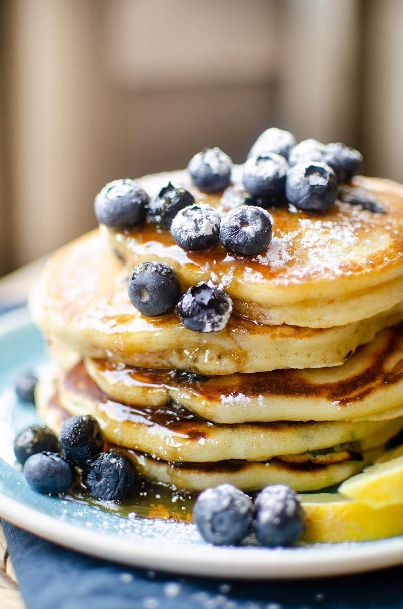

Recept - Blåbärspannkakor

God och spännande variant av den klassiska pannkakan.
Blåbärspannkaka är ett mättande och uppskattat alternativ till lunch, middag eller kanske som mellanmål.
Servera blåbärspannkakan med en klick vaniljglass.
Ingredienser
- 3 ägg
- 6 dl mjölk
- 2 1/2 dl vetemjölk
- 1 msk socker
- 1/2 tsk salt
- 300g djuptfrysta blåbär
- 1/2 dl florsocker
Instruktioner:
- Sätt på ungnen på 200°C
- Vispa ihop äggen och hälften av mjölken. Tillsätt mjölet och vispa till en klimpfri smet. Häll i resten av
mjölken och tillsätt socker och salt.
- Häll smeten i en lätt smord långpanna, ca 30x40 cm (för 4 port). Strö på blåbären. Grädda i ca 25 min.
- Pudra över florsockret och servera blåbärspannkakan skuren i bitar med en klick vaniljglass.